De verandering waargenomen
A.E. Cohen als historicus en universitair bestuurder
Tentoonstelling in de Universiteitsbibliotheek te Leiden, van 28 november 2003 tot en met 4 januari 2004.
Tentoongestelde stukken
12. Hoeder van het verleden
In zekere zin is Cohen altijd docent geweest en gebleven. Ook als auteur, hoewel zijn lijst van publicaties bescheiden is, kwam hij onmiddellijk ter zake, in duidelijk Nederlands. Het ordenen en helder presenteren van informatie mag een algemeen kenmerk van hem genoemd worden, of het nu de lemma’s betreft in de Historische Winkler Prins, zijn wekelijkse overzichten in Tijd en taak of zijn bijdragen aan de Reflector. De geschiedenis en mores van de Leidse universiteit bleven hem ook na zijn afscheid boeien. Om zijn kennis van Leidse zaken was hij zeer gewaardeerd bij de annotatie van de Briefwisseling van Huizinga. Zonder het initiatief van Cohen zou er geen derde deel van het Album scholasticum zijn verschenen, al kon het resultaat niet helemaal voldoen aan zijn kritische eisen. Hij zette zich als geen ander in om de archieven van de universiteit in de universiteitsbibliotheek te houden. Zo verzuchtte hij eens: “Ik heb mij rotgewerkt voor de archiefcommissie”. Zijn laatste wapenfeit is zichtbaar bij elke erepromotie: de kappa is op zijn initiatief uitgevoerd in nassaublauw. Tenslotte heeft Cohen zijn eigen archieven geschoond en geordend, waarna ze kunnen worden overgedragen aan de universiteitsbibliotheek.
| 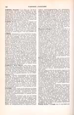 | 12.1. Historische Winkler
Prins, 3 dln., Amsterdam/Brussel: Elsevier, 1957-1959.
Hierin naast tal van ongesigneerde bijdragen van Cohen, ook enkele gesigneerde: deel II: Fascisme (196-198), Fascisme in Nederland (198), Hitler (406, 409-410); deel III: Mussert (109), Mussolini (met Ph. de Vries) (109-110), Nationaal-Socialisme (123-125), Rost van Tonningen (376), Seyss-Inquart (435), SS (484-485), Wereldoorlog II: A. Politiek Overzicht: 1. Algemeen (659-660), 2. Nederland (660-661); C. Verzet: 1. Algemeen (667-668), 2. Nederland (668-669) |
|
| 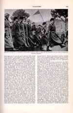 | 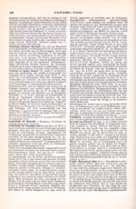 | |
| 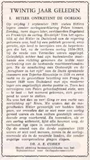 | 12.2. Reflector van het
hedendaagse wereldgebeuren 1 (1959-1960)
¶ Voor een overzicht van de bijdragen: zie de bibliografie. |
|
| 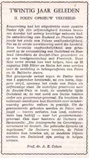 | 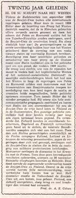 | 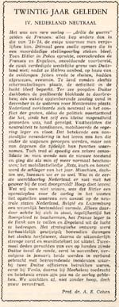 |
| 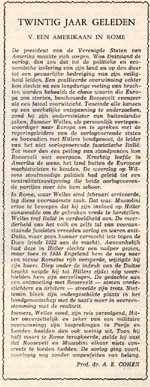 | 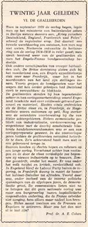 | 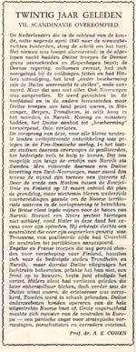 |
| 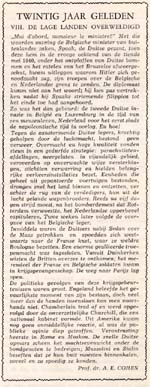 | 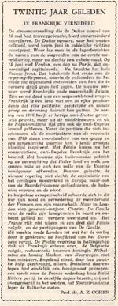 | |
| 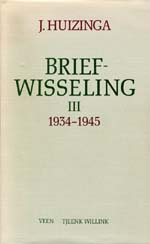 | 12.3. J. Huizinga, Briefwisseling.
Léon Hanssen, W.E. Krul, Anton van der Lem ed. (3 dln.,
Utrecht/Antwerpen, 1989-1991)
¶ Op verzoek van de redactie trad Cohen toe tot de `Commissie van Toezicht’ en wel om zijn grote kennis van zaken en personen in het Leiden van het tweede kwart van de twintigste eeuw. |
|
| 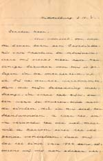 | 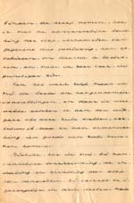 | 12.4. J. Huizinga aan de
firma Bohn, uitgeverij te Haarlem, 3 april 1904. [UBL, Archief Bohn, BOH C 61] ¶ Natuurlijk zijn er sinds de publicatie van de Briefwisseling andere brieven van Huizinga teruggevonden. Recent dook deze brief op bij het bewerken van het archief van de firma Bohn. |
| 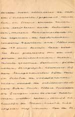 | 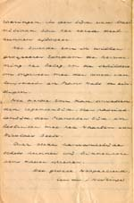 | |
| 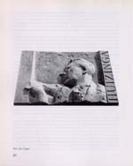 | 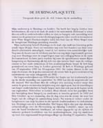 | 12.5. `De Huizinga-plaquette: toespraak door AEC bij de onthulling', in: Jaarboekje voor Geschiedenis en Oudheidkunde van Leiden en omstreken 88 (1996) 20-25, ill. |
| 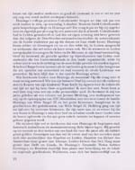 | 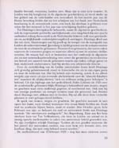 | |
| 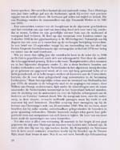 | 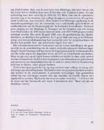 | |
| 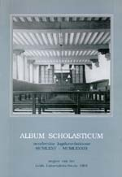 | 12.6. Album scholasticum
Academiae Lugduno-Batavae MCMLXXV-MCMLXXXIX (Leiden: Leids
Universiteits-Fonds, 1991).
¶ Cohen was de initiatiefnemer tot de voortzetting van het Album Scholasticum met een derde deel. |
|
| 12.7. Erepromotie met kappa
in nassaublauw.
¶ Gevoelig voor ceremonieel, pleitte Cohen voor het invoeren van
de kappa in een contrasterende kleur: niet rood als de toga, maar
nassaublauw. Rector magnificus Wagenaar vond het niets, maar diens
opvolger Breimer ging er gretig op in. [AEC] |
||
| 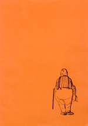 | 12.8. Exit Cohen. Van achteren gezien en getekend door Dick de Boer, Uit: Historische Informatie Courant, jaargang 12, nr. 3, januari 1979. | |
| vorige pagina | |